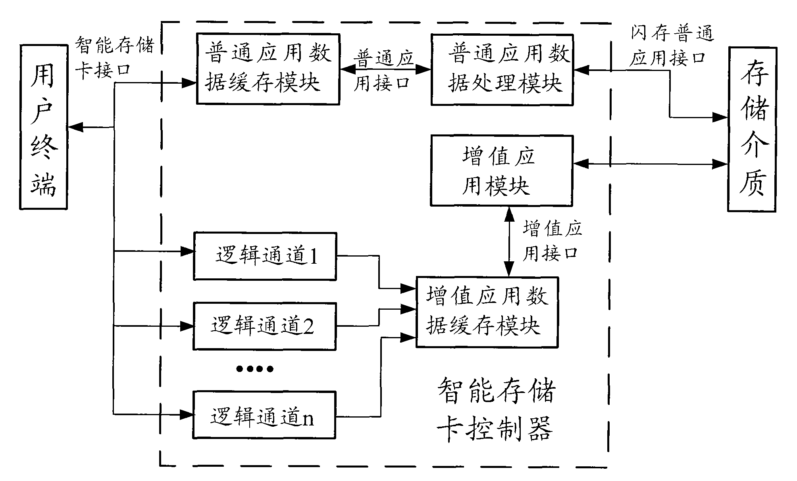

发明名称--一种智能存储卡及提高智能存储卡传输速率的方法
| 申请号 | CN200810247376.7 | 申请日 | 2008.12.29 | ||
| 公开（公告）号 | CN101447035A | 公开（公告）日 | 2009.06.03 | ||
| IPC分类号 | G06K19/073 | 申请（专利权）人 | 普天信息技术研究院有限公司; | ||
| 发明人 | 廖泉;曹会扬;姜涌; | 优先权号 |
摘要:
本发明公开了一种智能存储卡及提高智能存储卡传输速率的方法，包括：增值应用数据缓存模块、增值应用模块、逻辑通道以及存储介质，其中，逻辑通道，用于接收用户终端上层程序根据预设的策略发送的增值数据，发送至增值应用数据缓存模块；增值应用模块，用于将来自增值应用数据缓存模块的增值数据进行增值应用处理，将处理后的增值数据发送至存储介质预设地址中。应用本发明，可以提高智能存储卡增值应用数据传输速率，降低用户终端应用程序与智能存储卡交互的时间，提高了用户终端的增值应用体验；同时，对现有智能存储卡的改动小，掉电不会丢失存储的增值数据，有利于智能存储卡的推广。
摘要附图:
